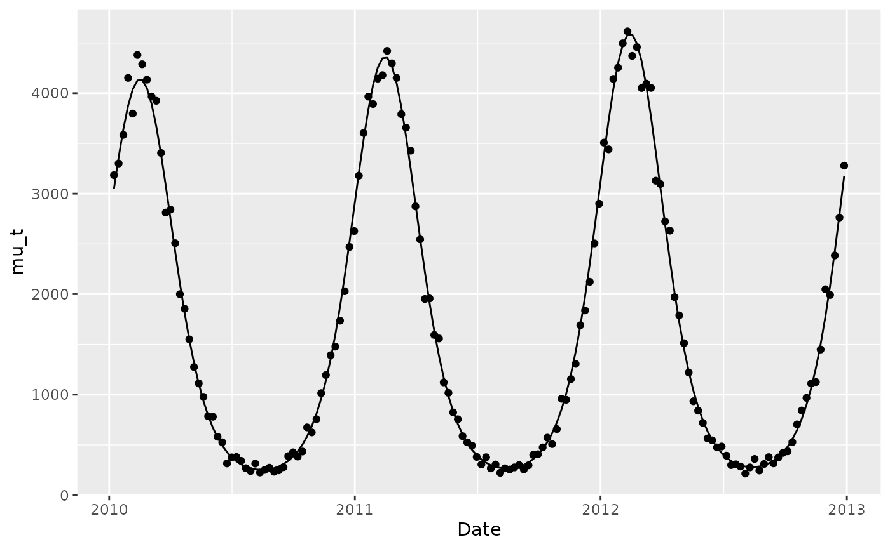
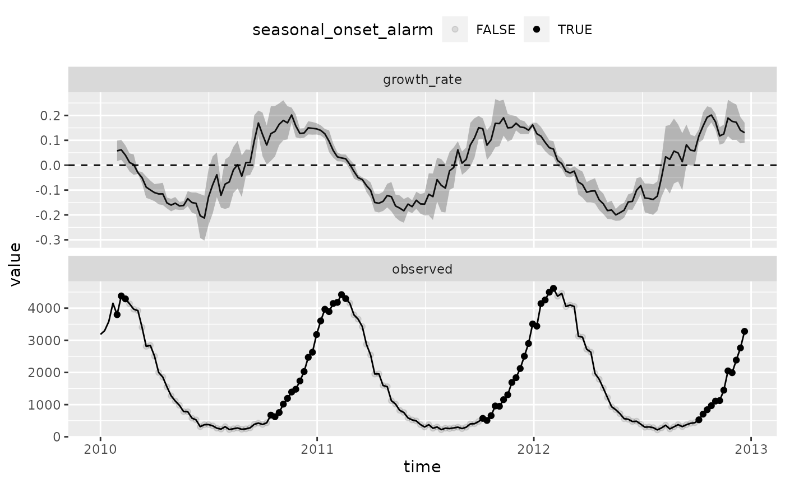

Automated Detection of Seasonal Epidemic Onset in R
Source:vignettes/aedseo_introduction.Rmd
aedseo_introduction.Rmd
library(aedseo)
library(tibble)
library(tidyr)
library(dplyr)
#>
#> Attaching package: 'dplyr'
#> The following objects are masked from 'package:stats':
#>
#> filter, lag
#> The following objects are masked from 'package:base':
#>
#> intersect, setdiff, setequal, union
library(ggplot2)Introduction
This vignette …
The methodology used to detect the onset of seasonal respiratory epidemics can be divided into two essential criteria:
- The local estimate of the exponential growth rate, \(r\), is significantly greater than zero.
- The sum of cases (SoC) over the past \(k\) units of time exceeds a disease-specific threshold.
Here, \(k\) denotes the window size employed to obtain the local estimate of the exponential growth rate and the SoC. When both of these criteria are met, an alarm is triggered and the onset of the seasonal epidemic is detected.
Simulations
To assess the effectiveness of the aedseo function, we
simulate some data. The simulated data is generated using a negative
binomial model with a mean parameter \(\mu\) and a variance parameter \(\phi\mu\). In this context \(\phi\) denotes a dispersion parameter,
which is assumed to be greater than or equal to 1. The mean, denoted as
\(\mu(t)\), is defined by a linear
predictor that incorporates both a trend component and seasonality
components represented by Fourier terms. The equation \(\mu(t)\) is as follows:
\[\begin{equation} \mu(t) = \exp\Biggl( \theta + \beta t + \sum_{j=1}^m \biggl( \gamma_{\sin} \sin\Bigl( \frac{2 \pi t}{52}\Bigl) + \gamma_{\cos} \cos \Bigl( \frac{2 \pi t}{52} \Bigl) \biggl) \Biggl) \end{equation}\]
mu_t <- function(
t,
theta = 1,
exp_beta = 1.001,
gamma_sin = 1,
gamma_cos = 1,
trend = 1,
j = 1,
...) {
# Start construction of linear predictor
linear_predictor <- theta
# ... add a trend if the scenario request it
if (trend == 1) {
linear_predictor <- linear_predictor + log(exp_beta) * t
}
# ... add a seasonal component
linear_predictor <- linear_predictor +
gamma_sin * sin(2 * pi * t * j / 52) + gamma_cos * cos(2 * pi * t * j / 52)
return(exp(linear_predictor))
}
simulate_from_nbinom <- function(...) {
# Set some default values for the simulation
default_pars <- list(
"t" = 1,
"theta" = 1,
"exp_beta" = 1.001,
"gamma_sin" = 1,
"gamma_cos" = 1,
"trend" = 1,
"j" = 1,
"phi" = 1,
"seed" = 42
)
# Match call
mc <- as.list(match.call())[-1]
# ... and change parameters relative to the call
index_mc <- !names(default_pars) %in% names(mc)
mc <- append(mc, default_pars[index_mc])[names(default_pars)]
# Set the seed
set.seed(mc$seed)
# Calculate the number of time points
n <- length(eval(mc$t))
# Calculate mu_t
mu_t_scenario <- do.call(what = "mu_t", args = mc)
# ... and compute the variance of the negative binomial distribution
variance <- mu_t_scenario * mc$phi
# ... and infer the size in the negative binomial distribution
size <- (mu_t_scenario + mu_t_scenario^2) / variance
# Plugin and simulate the data
simulation <- rnbinom(n = n, mu = mu_t_scenario, size = size)
return(list("mu_t" = mu_t_scenario, "simulation" = simulation, "pars" = mc))
}
# Define the number of years and the number of months within a year
years <- 3
weeks <- 52
# ... calculate the total number of observations
n <- years * weeks
# ... and a vector containing the overall time passed
time_overall <- 1:n
# Create arbitrary dates
dates <- as.POSIXct(
x = time_overall * 86400 * 7,
origin = "2010-01-01",
tz = "UTC",
format = "%F"
)
# Simulate the data
simulation <- simulate_from_nbinom(t = time_overall, theta = log(1000), phi = 5)
# Collect the data in a 'tibble'
sim_data <- tibble(
Date = dates,
mu_t = simulation$mu_t,
y = simulation$simulation
)A total of three years of weekly data are then simulated with the following set of parameters:
- \(\theta=\log(1000)\), representing an average intensity of 1000 cases.
- \(\exp(\beta)=1.001\), indicating a slowly increasing trend.
- \(\gamma_{\sin} = 1\) and \(\gamma_{\cos} = 1\), representing the seasonality component.
- \(\phi = 5\), which represents the dispersion parameter for the negative binomial distribution.
In the following figure, the simulated data (solid circles) is visualized alongside the mean (solid line) for the three arbitrary years of weekly data.
# Have a glance at the time varying mean and the simulated data
sim_data %>%
ggplot(mapping = aes(x = Date)) +
geom_line(mapping = aes(y = mu_t)) +
geom_point(mapping = aes(y = y))
Applying the algorithm
In the following section, the application of the algorithm to the
simulated data is outlined. The first step is to transform the simulated
data into a aedseo_tsd object using the tsd()
function.
# Construct an 'aedseo_tsd' object with the time series data
tsd_data <- tsd(
observed = simulation$simulation,
time = dates,
time_interval = "week"
)Next, the time series data object is passed to the
aedseo() function. Here, a window width of \(k=5\) is specified, meaning that a total of
5 weeks is used in the local estimate of the exponential growth rate.
Additionally, a 95% confidence interval is specified. Finally, the
exponential growth rate is estimated using quasi-Poisson regression to
account for overdispersion in the data.
# Apply the 'aedseo' algorithm
aedseo_results <- aedseo(
tsd = tsd_data,
k = 5,
level = 0.95,
family = "quasipoisson"
)In the figure below, the observed values from the simulations is visualized alongside the local estimate of the growth rate and its corresponding 95% confidence interval.
# Join the observations and estimated growth rates
full_data <- full_join(
x = tsd_data,
y = aedseo_results,
by = join_by("time" == "reference_time", "observed" == "observed")
)
# Data to add horizontal line in growth rate
ablines <- tibble(name = c("growth_rate", "observed"), x = c(0, NA))
# Make a nice plot
full_data %>%
pivot_longer(cols = c(observed, growth_rate)) %>%
ggplot(mapping = aes(x = time, y = value)) +
geom_line() +
geom_point(
data = tsd_data %>%
mutate(name = "observed"),
mapping = aes(y = observed)
) +
geom_ribbon(
data = aedseo_results %>%
mutate(name = "growth_rate"),
mapping = aes(
x = reference_time,
ymin = lower_growth_rate,
ymax = upper_growth_rate
),
inherit.aes = FALSE, alpha = 0.3
) +
geom_hline(
data = ablines,
mapping = aes(yintercept = x),
linetype = "dashed"
) +
facet_wrap(facets = vars(name), ncol = 1, scale = "free_y")
#> Warning: Removed 4 rows containing missing values (`geom_line()`).
#> Warning: Removed 1 rows containing missing values (`geom_hline()`).